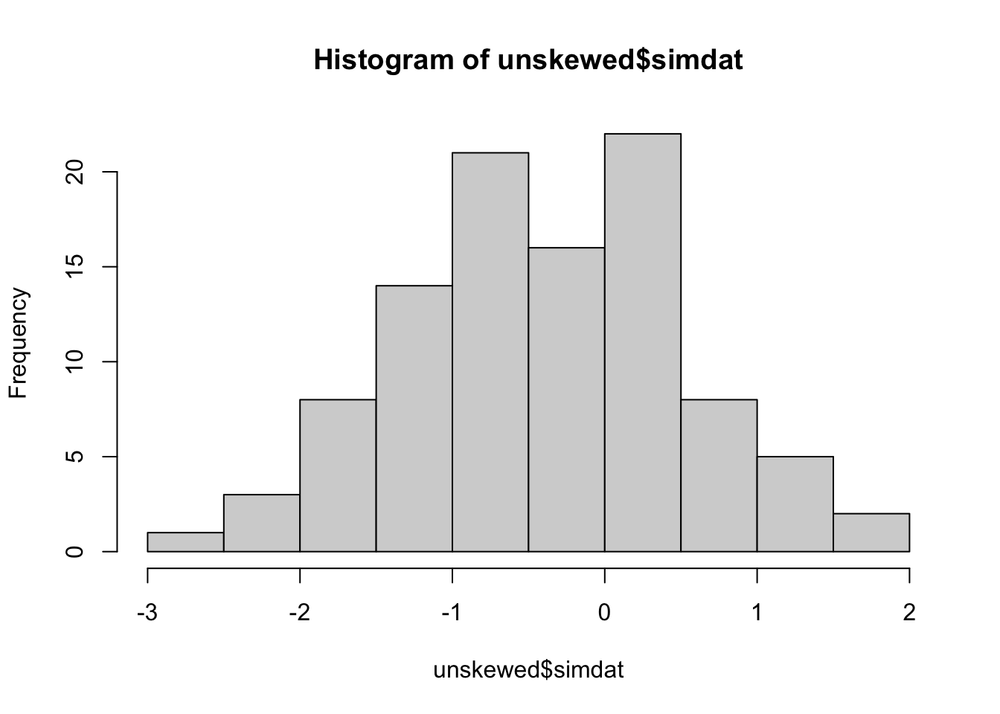
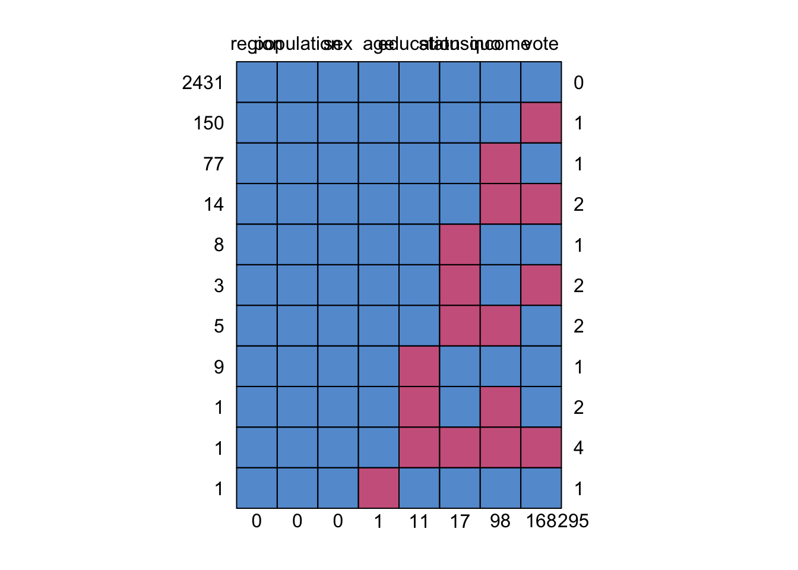
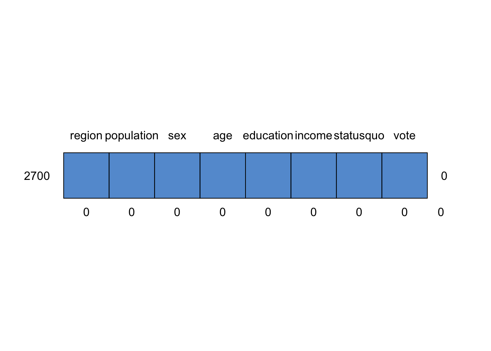
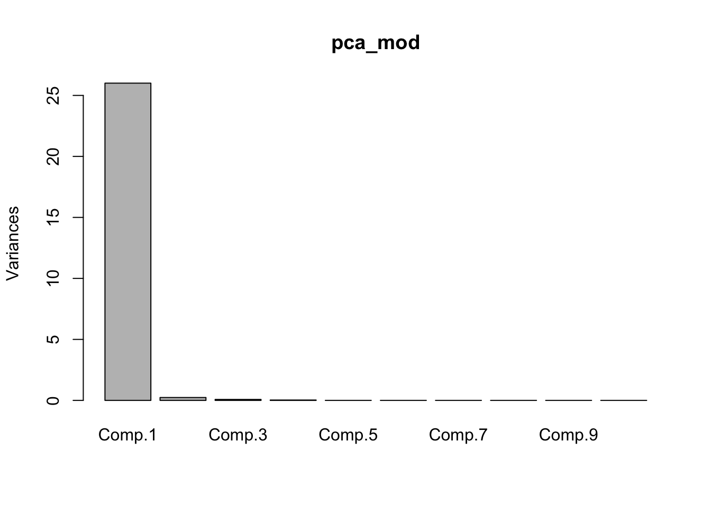
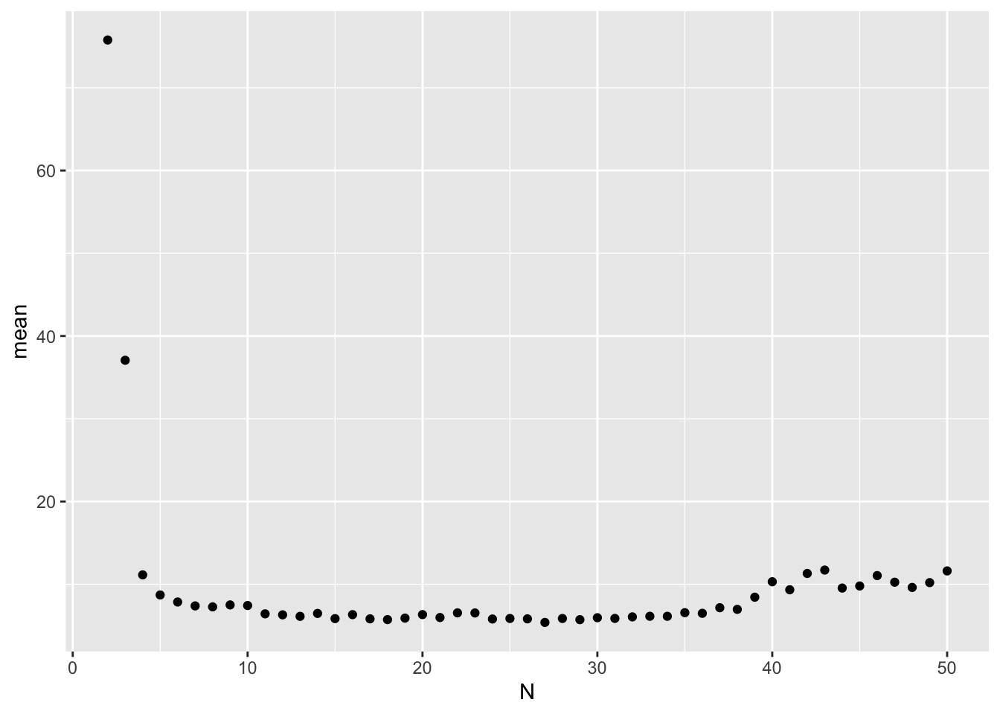
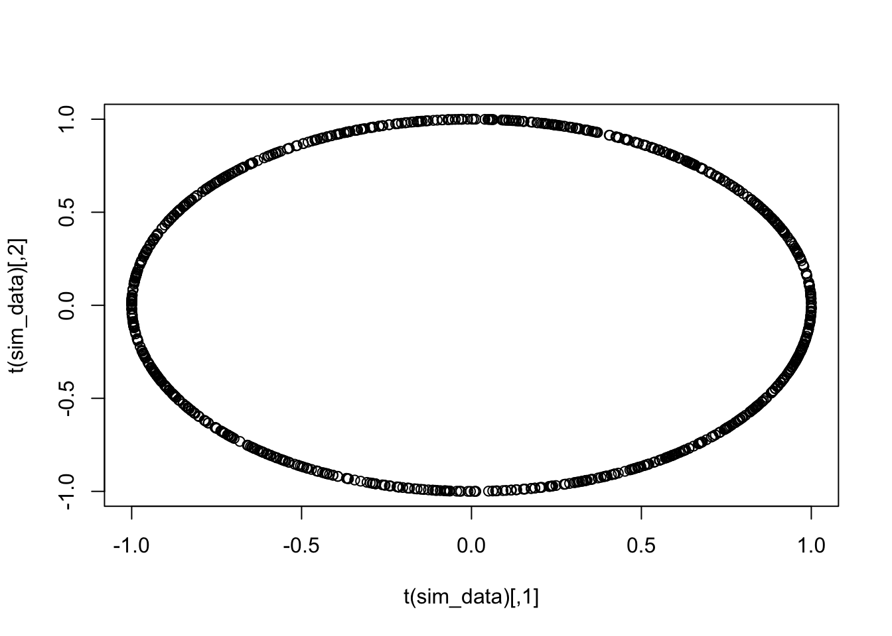

Chapter 5 Regression Predictive Models
In this chapter, we consider predictive models built from ordinary least squares models. Even in this case, that we have been thinking about since Chapter 1, there are new things to think about when focusing on predictive models. Our primary goal is variable selection for the purposes of prediction. However, sometimes, it may be more efficient to combine predictors into new predictors, rather than using the predictors as given. This process will also be lumped under the general term of “variable selection” for lack of a better descriptor.
5.1 Preprocessing
First, we talk about preprocessing the predictors. A common technique is to center and scale the predictors, so that all of the predictors are on a common scale. Some techniques that we will see in the next chapter require the predictors to be on a similar scale, while there is not usually a down side in terms of predictive power for this in a regression model. However, it can be harder to interpret the coefficients of ordinary least squares regression, since the predictors are no longer in their original scales.
Let’s look at the insurance data set from the previous chapter to see how this could be done via R.
dd <- read.csv("data/insurance.csv")
summary(dd)## age sex bmi children
## Min. :18.00 Length:1338 Min. :16.00 Min. :0.000
## 1st Qu.:27.00 Class :character 1st Qu.:26.30 1st Qu.:0.000
## Median :39.00 Mode :character Median :30.40 Median :1.000
## Mean :39.21 Mean :30.67 Mean :1.095
## 3rd Qu.:51.00 3rd Qu.:34.70 3rd Qu.:2.000
## Max. :64.00 Max. :53.10 Max. :5.000
## smoker region expenses
## Length:1338 Length:1338 Min. : 1122
## Class :character Class :character 1st Qu.: 4740
## Mode :character Mode :character Median : 9382
## Mean :13270
## 3rd Qu.:16640
## Max. :63770mod_raw <- lm(expenses ~ ., data = dd)
summary(mod_raw)##
## Call:
## lm(formula = expenses ~ ., data = dd)
##
## Residuals:
## Min 1Q Median 3Q Max
## -11302.7 -2850.9 -979.6 1383.9 29981.7
##
## Coefficients:
## Estimate Std. Error t value Pr(>|t|)
## (Intercept) -11941.6 987.8 -12.089 < 2e-16 ***
## age 256.8 11.9 21.586 < 2e-16 ***
## sexmale -131.3 332.9 -0.395 0.693255
## bmi 339.3 28.6 11.864 < 2e-16 ***
## children 475.7 137.8 3.452 0.000574 ***
## smokeryes 23847.5 413.1 57.723 < 2e-16 ***
## regionnorthwest -352.8 476.3 -0.741 0.458976
## regionsoutheast -1035.6 478.7 -2.163 0.030685 *
## regionsouthwest -959.3 477.9 -2.007 0.044921 *
## ---
## Signif. codes: 0 '***' 0.001 '**' 0.01 '*' 0.05 '.' 0.1 ' ' 1
##
## Residual standard error: 6062 on 1329 degrees of freedom
## Multiple R-squared: 0.7509, Adjusted R-squared: 0.7494
## F-statistic: 500.9 on 8 and 1329 DF, p-value: < 2.2e-16We see that the numeric predictors are age and bmi, which we can center and scale by subtracting the mean and dividing by the standard deviation.
dd$bmi <- (dd$bmi - mean(dd$bmi))/sd(dd$bmi)
dd$age <- (dd$age - mean(dd$age))/sd(dd$age)Compare the model with the scaled predictors to the one with the raw predictors above to see what changes.
mod_scaled <- lm(expenses ~ ., data = dd)
summary(mod_scaled)##
## Call:
## lm(formula = expenses ~ ., data = dd)
##
## Residuals:
## Min 1Q Median 3Q Max
## -11302.7 -2850.9 -979.6 1383.9 29981.7
##
## Coefficients:
## Estimate Std. Error t value Pr(>|t|)
## (Intercept) 8532.8 410.9 20.764 < 2e-16 ***
## age 3608.6 167.2 21.586 < 2e-16 ***
## sexmale -131.4 332.9 -0.395 0.693255
## bmi 2069.1 174.4 11.864 < 2e-16 ***
## children 475.7 137.8 3.452 0.000574 ***
## smokeryes 23847.5 413.1 57.723 < 2e-16 ***
## regionnorthwest -352.8 476.3 -0.741 0.458976
## regionsoutheast -1035.6 478.7 -2.163 0.030685 *
## regionsouthwest -959.3 477.9 -2.007 0.044921 *
## ---
## Signif. codes: 0 '***' 0.001 '**' 0.01 '*' 0.05 '.' 0.1 ' ' 1
##
## Residual standard error: 6062 on 1329 degrees of freedom
## Multiple R-squared: 0.7509, Adjusted R-squared: 0.7494
## F-statistic: 500.9 on 8 and 1329 DF, p-value: < 2.2e-16Another technique is to deskew the predictors. Data that is very skew often has points that look like outliers, and those can be high leverage points for the model, meaning that they may overly impact the prediction of other values. Since values that are at the edge of the data range may follow a different pattern than values in the center of the data, this can adversely affect RMSE. As an example, suppose the true generative process of the data is \(y = \epsilon a x^b\), where \(\epsilon\) is a mean 1 random variable. If we take the logs of both sides, then we get \(\log y = \log a + b \log x + \log \epsilon\), which looks very much like our model for simple linear regression.
When trying to decide whether to deskew predictors, cross-validation can be useful. We can model the response both ways, and use the model with the lower RMSE. As always, we should be careful to avoid overfitting, and consider taking the simplest model that has a RMSE within one standard deviation of the lowest.
The process of de-skewing is done to positive variables via the Box-Cox transformation. The Box-Cox transform chooses a value for \(\lambda\) such that the transformed variable \[ x^* = \begin{cases} \frac{x^\lambda - 1}{\lambda} & \lambda\not= 0\\ \log(x)& \lambda = 0 \end{cases} \] We will not discuss the details of how \(\lambda\) is chosen, but the value that is chosen is one that deskews the variable of interest.
For example, suppose we have a random sample from an exponential random variable.
simdat <- rexp(100)
e1071::skewness(simdat)## [1] 1.434638We see that the data is moderately positively skewed. In order to apply the Box-Cox transform we need to put the data into a data frame.
df <- data.frame(simdat)Next, we use caret::preProcess to say what kind of processing we want to do to the data.
library(caret)
pre_process_mod <- preProcess(df, method = "BoxCox")Finally, to get the new data frame, we “predict” the new values from the pre-processing model.
unskewed <- predict(pre_process_mod, newdata = df)We can check that the new data has been unskewed:
e1071::skewness(unskewed$simdat)## [1] -0.02086347hist(unskewed$simdat)
If we wanted to center, scale and unskew it, we could do the following.
pre_process_mod <- preProcess(df,
method = c("BoxCox", "center", "scale"))
processed_data <- predict(pre_process_mod, newdata = df)
mean(processed_data$simdat)## [1] 9.32956e-18sd(processed_data$simdat)## [1] 15.2 Missing Data
Missing data is a very common problem. We may have a data set with 2000 observations of 50 variables, but each observation is missing information in at least one of the variables. Let’s start by observing the default behaviour of lm when there is missing data.
We use the St Louis housing data set that is required for your project.
dd <- read.csv("data/train_data.csv",
stringsAsFactors = FALSE)We see that this data set consists of 1201 observations of 29 variables. However, some of the variables consist entirely of missing data!
summary(dd$SOLD.DATE)## Mode NA's
## logical 1201Let’s model price on year built and sold date, and see what happens.
lm(PRICE ~ SOLD.DATE + YEAR.BUILT, data = dd)As we can see, it throws an error. More generally, the default behavior of R is to remove any observation that contains a missing value for any of the variables.
summary(lm(PRICE ~ YEAR.BUILT, data = dd))##
## Call:
## lm(formula = PRICE ~ YEAR.BUILT, data = dd)
##
## Residuals:
## Min 1Q Median 3Q Max
## -828255 -353012 -212364 -20400 64280835
##
## Coefficients:
## Estimate Std. Error t value Pr(>|t|)
## (Intercept) -11027057 3900975 -2.827 0.00480 **
## YEAR.BUILT 5926 2009 2.950 0.00326 **
## ---
## Signif. codes: 0 '***' 0.001 '**' 0.01 '*' 0.05 '.' 0.1 ' ' 1
##
## Residual standard error: 2225000 on 935 degrees of freedom
## (264 observations deleted due to missingness)
## Multiple R-squared: 0.009223, Adjusted R-squared: 0.008163
## F-statistic: 8.703 on 1 and 935 DF, p-value: 0.003255We see we have 935 degrees of freedom for the F-statistic, which we showed in the previous chapters should have \(n - 2\) degrees of freedom. We compute
sum(!is.na(dd$YEAR.BUILT)) - 2## [1] 935and we see that R has kept the 937 observations that don’t have any missing values.
It is a bad idea to build a final model based only on observations that have no missing values. First, as we saw in the previous chapter, the accuracy of predictions tends to increase with the number of observations that we have. Second, it is possible (likely even) that the missing data is not just randomly missing, but the fact that the value of one variable is missing may have an impact on how the other variables are related to the response!
As an example, for the housing data set, if BEDS is missing, that may very well be because the property is not, in fact, a house, but rather a vacant lot. If we remove all observations that have missing values for BEDS, then we remove all information about vacant lots. That means that we are going to need to have some way of dealing with the missing data.
If many, many values of a variable are missing, it may be appropriate to just remove the entire variable. In the extreme case of SOLD.DATE, which is missing all of its observations, then we should definitely just remove the entire variable.
We can use mean/median imputation of the missing values. This means that, for continuous data, we replace all of the missing values with either the mean or the median of the values that are not missing. For categorical data, we could replace all of the missing values with the value that occurs the most frequently in the values that are not missing.
For categorical data, we could create a new level which codes missing data.
We can predict the missing values based on the values that we do have. For example, if ZIP is missing, we could predict the value of ZIP based on the other characteristics of the house under consideration. Then we could use that ZIP to build the model.
For now, we will focus on mean imputation; we leave the last technique for once we have learned a few more predictive modeling techniques.
Here is how you can do mean imputation, using the mice package. The mice package does a lot more than just this! Let’s look at the carData::Chile data set. A first useful function in mice is md.pattern, which gives us information about how the missing values are organized.
library(mice)##
## Attaching package: 'mice'## The following object is masked from 'package:stats':
##
## filter## The following objects are masked from 'package:base':
##
## cbind, rbindchile <- carData::Chile
md.pattern(chile)
## region population sex age education statusquo income vote
## 2431 1 1 1 1 1 1 1 1 0
## 150 1 1 1 1 1 1 1 0 1
## 77 1 1 1 1 1 1 0 1 1
## 14 1 1 1 1 1 1 0 0 2
## 8 1 1 1 1 1 0 1 1 1
## 3 1 1 1 1 1 0 1 0 2
## 5 1 1 1 1 1 0 0 1 2
## 9 1 1 1 1 0 1 1 1 1
## 1 1 1 1 1 0 1 0 1 2
## 1 1 1 1 1 0 0 0 0 4
## 1 1 1 1 0 1 1 1 1 1
## 0 0 0 1 11 17 98 168 295We see that we have 2431 complete cases, 150 that are only missing vote, 77 that are only missing income and so on. The vast majority of missing data is in the income and vote column, and there is only one observation that is missing more than 2 values.
Unfortunately, we have to replace the missing values in the categorical variables by hand. The snazziest way (possibly) is using mutate_if and fct_explicit_na, which is shown below, but an easier way is to go through the categorical data one at a time, replacing NA with “(Missing)”.
library(tidyverse)
chile <- mutate(chile, vote = fct_explicit_na(f = vote),
sex = fct_explicit_na(f = sex),
education = fct_explicit_na(f = education),
region = fct_explicit_na(f = region))Note that fct_explicit_na has an argument na_level that can also be used to change NA to a value that is a current level. You simply use
mutate(chile, education = fct_explicit_na(f = education,
na_level = "P"))and this would change all of the NA values in education to be P.
Of course, any time you find yourself writing the same code over and over again, there is likely a way to automate it. We can do that using mutate_if as below.
chile <- mutate_if(chile,
is.factor,
~fct_explicit_na(f = ., na_level = "(Missing)"))OK, now we only have two more observations with missing values! Let’s see how mice can be used to replace those with the mean.
missing_model <- mice(chile, m = 1, maxit = 1, method = "mean")##
## iter imp variable
## 1 1 age income statusquochile <- mice::complete(data = missing_model)
md.pattern(chile)## /\ /\
## { `---' }
## { O O }
## ==> V <== No need for mice. This data set is completely observed.
## \ \|/ /
## `-----'
## region population sex age education income statusquo vote
## 2700 1 1 1 1 1 1 1 1 0
## 0 0 0 0 0 0 0 0 0Yay! We have successfully replaced all of the missing values! Later in the book, we will see that this is just a first step, and should by no means be the last thing you do with missing data. It is a really tricky problem.
Exercise 5.1 Consider the housing data set in the class kaggle competition, which is available here.
Perform mean imputation for the numerical data.
For categorical data, determine whether you can provide reasonable values for the missing data. If so, do it. If not, then replace the missing values with a new level, “(Missing)”.
5.2.1 Predicting when a level is missing from the training set
It can also happen that when you wish to predict a value, an observation is not missing, but it is also not found in the training set. For example, suppose you are trying to predict the PRICE of a house. You decide to model it on square footage and zip code. You build your model, but when you go to predict, there is a house in a zip code that you don’t have any data for. While this data isn’t missing, it causes similar problems to missing data in that we can’t predict a PRICE with that value of zip code.
The remedy for this is similar to the remedy for missing data. We should try to predict the value of the zip code based on other charactersitics of the house. For example, we could look at the lat/long information and pick the zip code that is the closest geographically. More sophisticated would be to predict the zip code using methods that we will cover later in the course. As a last resort, we could reassign the novel zip code in the test set to the most common value in the train set na_level option in fct_explicit_na, or to (Missing) using the if it exists in the train set.
5.3 Correlated Predictors
One common problem that comes up is when the predictors are correlated. Of course, when predictors are strongly correlated with the Response then we are golden, but when they are strongly correlated with one another… not so much. An extreme case of this is when two predictors are just affine combinations of one another; for example, temperature measured in celsius and temperature measured in Fahrenheit.
library(tidyverse)
dd <- read.csv("data/stl_weather_data.csv")
dd$DATE <- lubridate::ymd(dd$DATE)
dd_feb <- filter(dd, lubridate::month(DATE) == 2)
dd_feb <- mutate(dd_feb, TMAX_celsius = (TMAX - 32)*5/9,
TMIN_celsius = (TMIN - 32)* 5/9)
ggplot(dd_feb, aes(x = TMIN, y = TMAX)) + geom_point()
lm(TMAX ~ TMIN, data = dd_feb)##
## Call:
## lm(formula = TMAX ~ TMIN, data = dd_feb)
##
## Coefficients:
## (Intercept) TMIN
## 18.3863 0.9844lm(TMAX ~ TMIN + TMIN_celsius, data = dd_feb)##
## Call:
## lm(formula = TMAX ~ TMIN + TMIN_celsius, data = dd_feb)
##
## Coefficients:
## (Intercept) TMIN TMIN_celsius
## 18.3863 0.9844 NAThe default behavior of R in this case is to remove the linearly dependent predictor from the model entirely. This is probably the best case scenario. When the predictors are only strongly correlated, things work less smoothly. Let’s see this by adding a tiny bit of noise to the TMIN_celsius variable.
dd_feb$TMIN_celsius_jitter <- dd_feb$TMIN_celsius + rnorm(2260,0,.01)
mod2 <- lm(TMAX ~ TMIN + TMIN_celsius_jitter, data = dd_feb)
summary(mod2)##
## Call:
## lm(formula = TMAX ~ TMIN + TMIN_celsius_jitter, data = dd_feb)
##
## Residuals:
## Min 1Q Median 3Q Max
## -16.123 -6.220 -0.921 5.418 36.940
##
## Coefficients:
## Estimate Std. Error t value Pr(>|t|)
## (Intercept) 304.570 318.902 0.955 0.340
## TMIN -7.959 9.966 -0.799 0.425
## TMIN_celsius_jitter 16.098 17.939 0.897 0.370
##
## Residual standard error: 8.286 on 2257 degrees of freedom
## Multiple R-squared: 0.6268, Adjusted R-squared: 0.6265
## F-statistic: 1895 on 2 and 2257 DF, p-value: < 2.2e-16If you re-run the code above several times, you will see that there is quite a bit of variation in the estimates for the predictors! Let’s see how that plays out in terms of predictive modeling.
train(TMAX ~ TMIN + TMIN_celsius_jitter,
data = dd_feb,
method = "lm",
trControl = trainControl(method = "repeatedcv", repeats = 5))## Linear Regression
##
## 2260 samples
## 2 predictor
##
## No pre-processing
## Resampling: Cross-Validated (10 fold, repeated 5 times)
## Summary of sample sizes: 2032, 2034, 2034, 2035, 2036, 2034, ...
## Resampling results:
##
## RMSE Rsquared MAE
## 8.278098 0.6270858 6.700965
##
## Tuning parameter 'intercept' was held constant at a value of TRUEWe see that our RMSE is about 8.2-ish. Now, what if we only used TMIN?
train(TMAX ~ TMIN,
data = dd_feb,
method = "lm",
trControl = trainControl(method = "repeatedcv", repeats = 5))## Linear Regression
##
## 2260 samples
## 1 predictor
##
## No pre-processing
## Resampling: Cross-Validated (10 fold, repeated 5 times)
## Summary of sample sizes: 2034, 2034, 2035, 2034, 2033, 2033, ...
## Resampling results:
##
## RMSE Rsquared MAE
## 8.278169 0.6274499 6.699107
##
## Tuning parameter 'intercept' was held constant at a value of TRUEHowever, from the point of view of prediction, it doesn’t make much difference. Where it can make a big difference is when we have more variables than observations due to the large number of correlated predictors!
Let’s consider a more realistic example from the textbook, the permeability data set.
library(caret)
data("tecator") #loads fingerprints and endpointsThis data set consists of 215 observations of three responses (the percentages of water, fat and protein) and 100 predictors. The predictors are the infrared absorption of finely chopped pure meat with different moisture, fat and protein contents. The wavelength range was from 850-1050 nm, and we expect the absorption of nearby wavelengths to be highly correlated from sample to sample.
Let’s look at the correlation.
cor(absorp)[1:5, 1:5]## [,1] [,2] [,3] [,4] [,5]
## [1,] 1.0000000 0.9999908 0.9999649 0.9999243 0.9998715
## [2,] 0.9999908 1.0000000 0.9999916 0.9999678 0.9999309
## [3,] 0.9999649 0.9999916 1.0000000 0.9999923 0.9999707
## [4,] 0.9999243 0.9999678 0.9999923 1.0000000 0.9999930
## [5,] 0.9998715 0.9999309 0.9999707 0.9999930 1.0000000Wow. That’s super correlated.
cor(absorp)[1:5,96:100]## [,1] [,2] [,3] [,4] [,5]
## [1,] 0.9641872 0.9637646 0.9634458 0.9632349 0.9630971
## [2,] 0.9643224 0.9639138 0.9636099 0.9634149 0.9632935
## [3,] 0.9644405 0.9640454 0.9637556 0.9635757 0.9634698
## [4,] 0.9645465 0.9641643 0.9638881 0.9637224 0.9636311
## [5,] 0.9646512 0.9642813 0.9640179 0.9638656 0.9637879Even at the tail end, that is really high correlation! One way to deal with this is by using Principal Components Analysis (PCA). PCA tries to find the orthogonal directions of maximum variance in data. The first direction will be the one with the most variance. The second direction will be the one that has the most variance among all directions that are orthogonal to the first direction. And so on. Then, we can rewrite the data in terms of this new basis. Let’s see how it works.
pca_mod <- princomp(absorp)The standard deviations of the data in the various directions are stored in pca_mod$sdev.
pca_mod$sdev %>% head()## Comp.1 Comp.2 Comp.3 Comp.4 Comp.5 Comp.6
## 5.09956971 0.48726521 0.27943507 0.17333383 0.03894093 0.02575005We can see that the standard deviations get quite small quite quickly, so after the first 1-4 directions, there is really not much else in the data. In other words, we may be able to restrict to those 4 components and build just as good of a model as using all 100 predictors. It can be helpful to plot the standard deviations or variances in a scree plot to see where it looks like they are leveling off.
barplot(pca_mod$sdev[1:30])
screeplot(pca_mod)
The built in R function screeplot plots the variances and not the standard deviations. Next, if we are going to be using the PCA data to build a model, it will be useful to have the data written in the new basis!
pca_data <- predict(pca_mod, absorp)
pca_data <- as.data.frame(pca_data)
pca_data$moisture <- endpoints[,1]
mod2 <- lm(moisture ~ Comp.1 + Comp.2 + Comp.3 + Comp.4,
data = pca_data)
summary(mod2)##
## Call:
## lm(formula = moisture ~ Comp.1 + Comp.2 + Comp.3 + Comp.4, data = pca_data)
##
## Residuals:
## Min 1Q Median 3Q Max
## -7.8858 -2.2959 -0.1283 2.3089 7.9886
##
## Coefficients:
## Estimate Std. Error t value Pr(>|t|)
## (Intercept) 63.20442 0.22298 283.453 < 2e-16 ***
## Comp.1 -0.92449 0.04373 -21.143 < 2e-16 ***
## Comp.2 2.83891 0.45762 6.204 2.89e-09 ***
## Comp.3 22.42314 0.79797 28.100 < 2e-16 ***
## Comp.4 28.12480 1.28642 21.863 < 2e-16 ***
## ---
## Signif. codes: 0 '***' 0.001 '**' 0.01 '*' 0.05 '.' 0.1 ' ' 1
##
## Residual standard error: 3.27 on 210 degrees of freedom
## Multiple R-squared: 0.893, Adjusted R-squared: 0.891
## F-statistic: 438.3 on 4 and 210 DF, p-value: < 2.2e-16This model has an \(R^2\) of 0.893, which is pretty high. If we built the model on all of the variables, we would get the following.
mod_full <- lm(moisture ~ .,
data = pca_data)
summary(mod_full)##
## Call:
## lm(formula = moisture ~ ., data = pca_data)
##
## Residuals:
## Min 1Q Median 3Q Max
## -2.44093 -0.40674 -0.02251 0.40726 2.45952
##
## Coefficients:
## Estimate Std. Error t value Pr(>|t|)
## (Intercept) 6.320e+01 6.739e-02 937.923 < 2e-16 ***
## Comp.1 -9.245e-01 1.321e-02 -69.961 < 2e-16 ***
## Comp.2 2.839e+00 1.383e-01 20.528 < 2e-16 ***
## Comp.3 2.242e+01 2.412e-01 92.982 < 2e-16 ***
## Comp.4 2.812e+01 3.888e-01 72.342 < 2e-16 ***
## Comp.5 -4.198e+01 1.731e+00 -24.260 < 2e-16 ***
## Comp.6 -3.653e+01 2.617e+00 -13.958 < 2e-16 ***
## Comp.7 4.345e+01 4.715e+00 9.216 1.86e-15 ***
## Comp.8 4.700e+01 6.487e+00 7.246 5.46e-11 ***
## Comp.9 8.634e+00 1.482e+01 0.583 0.561298
## Comp.10 1.152e+02 1.991e+01 5.783 6.51e-08 ***
## Comp.11 4.797e+02 3.300e+01 14.535 < 2e-16 ***
## Comp.12 -3.969e+02 3.910e+01 -10.153 < 2e-16 ***
## Comp.13 -4.433e+02 6.820e+01 -6.500 2.20e-09 ***
## Comp.14 -2.244e+01 9.363e+01 -0.240 0.810982
## Comp.15 -1.509e+03 1.332e+02 -11.329 < 2e-16 ***
## Comp.16 4.852e+02 1.506e+02 3.221 0.001666 **
## Comp.17 -1.042e+03 1.711e+02 -6.087 1.59e-08 ***
## Comp.18 -3.339e+02 1.844e+02 -1.810 0.072894 .
## Comp.19 -9.393e+02 2.281e+02 -4.118 7.27e-05 ***
## Comp.20 3.724e+02 2.706e+02 1.376 0.171406
## Comp.21 3.162e+03 3.369e+02 9.387 7.47e-16 ***
## Comp.22 8.875e+02 3.769e+02 2.354 0.020266 *
## Comp.23 2.681e+03 4.040e+02 6.637 1.13e-09 ***
## Comp.24 4.996e+03 4.749e+02 10.522 < 2e-16 ***
## Comp.25 -1.319e+03 4.854e+02 -2.717 0.007615 **
## Comp.26 3.495e+03 6.086e+02 5.743 7.84e-08 ***
## Comp.27 5.138e+00 6.431e+02 0.008 0.993640
## Comp.28 4.473e+02 6.959e+02 0.643 0.521704
## Comp.29 1.120e+02 7.367e+02 0.152 0.879445
## Comp.30 -3.362e+03 7.850e+02 -4.282 3.88e-05 ***
## Comp.31 -9.777e+02 8.611e+02 -1.135 0.258576
## Comp.32 9.625e+02 8.660e+02 1.111 0.268715
## Comp.33 -6.414e+03 9.394e+02 -6.827 4.43e-10 ***
## Comp.34 8.552e+02 1.004e+03 0.852 0.396087
## Comp.35 1.666e+03 1.095e+03 1.521 0.131093
## Comp.36 4.309e+03 1.269e+03 3.395 0.000946 ***
## Comp.37 1.235e+03 1.290e+03 0.957 0.340514
## Comp.38 -5.082e+03 1.326e+03 -3.832 0.000209 ***
## Comp.39 2.729e+03 1.441e+03 1.893 0.060864 .
## Comp.40 -5.201e+03 1.548e+03 -3.361 0.001059 **
## Comp.41 2.597e+03 1.611e+03 1.612 0.109677
## Comp.42 -5.340e+03 1.851e+03 -2.885 0.004676 **
## Comp.43 -1.115e+04 1.879e+03 -5.936 3.22e-08 ***
## Comp.44 1.109e+04 1.894e+03 5.856 4.65e-08 ***
## Comp.45 3.121e+03 1.968e+03 1.586 0.115579
## Comp.46 1.349e+03 2.144e+03 0.629 0.530414
## Comp.47 -1.849e+03 2.385e+03 -0.775 0.439818
## Comp.48 1.124e+02 2.456e+03 0.046 0.963574
## Comp.49 -1.178e+04 2.603e+03 -4.526 1.48e-05 ***
## Comp.50 8.324e+03 2.720e+03 3.061 0.002755 **
## Comp.51 -8.510e+03 2.885e+03 -2.950 0.003859 **
## Comp.52 5.972e+02 3.035e+03 0.197 0.844381
## Comp.53 4.614e+02 3.247e+03 0.142 0.887256
## Comp.54 -1.206e+04 3.510e+03 -3.434 0.000829 ***
## Comp.55 -8.580e-01 3.637e+03 0.000 0.999812
## Comp.56 8.135e+03 3.760e+03 2.164 0.032569 *
## Comp.57 2.990e+03 3.931e+03 0.760 0.448542
## Comp.58 1.974e+04 4.031e+03 4.896 3.24e-06 ***
## Comp.59 -9.072e+03 4.181e+03 -2.170 0.032089 *
## Comp.60 5.657e+02 4.339e+03 0.130 0.896512
## Comp.61 5.168e+03 4.401e+03 1.174 0.242713
## Comp.62 1.083e+04 4.521e+03 2.395 0.018231 *
## Comp.63 7.096e+02 4.607e+03 0.154 0.877875
## Comp.64 -1.632e+04 4.949e+03 -3.298 0.001297 **
## Comp.65 -1.846e+03 5.163e+03 -0.357 0.721412
## Comp.66 -1.317e+03 5.628e+03 -0.234 0.815399
## Comp.67 -5.633e+01 5.787e+03 -0.010 0.992250
## Comp.68 -6.474e+03 5.953e+03 -1.088 0.279065
## Comp.69 -1.259e+04 6.196e+03 -2.031 0.044541 *
## Comp.70 1.470e+04 6.386e+03 2.303 0.023115 *
## Comp.71 4.502e+03 6.514e+03 0.691 0.490891
## Comp.72 8.784e+03 6.905e+03 1.272 0.205880
## Comp.73 -7.296e+03 7.072e+03 -1.032 0.304398
## Comp.74 -2.120e+04 7.378e+03 -2.873 0.004848 **
## Comp.75 -1.377e+04 7.718e+03 -1.785 0.076972 .
## Comp.76 6.789e+03 7.913e+03 0.858 0.392737
## Comp.77 1.892e+04 8.029e+03 2.356 0.020158 *
## Comp.78 -2.219e+03 8.403e+03 -0.264 0.792168
## Comp.79 1.272e+04 8.982e+03 1.416 0.159416
## Comp.80 2.231e+03 9.068e+03 0.246 0.806087
## Comp.81 -4.583e+03 9.269e+03 -0.494 0.621961
## Comp.82 1.311e+03 9.527e+03 0.138 0.890829
## Comp.83 1.568e+04 1.032e+04 1.520 0.131339
## Comp.84 1.165e+04 1.068e+04 1.092 0.277341
## Comp.85 -1.336e+04 1.112e+04 -1.202 0.232000
## Comp.86 -5.835e+03 1.161e+04 -0.502 0.616395
## Comp.87 -5.730e+04 1.213e+04 -4.723 6.67e-06 ***
## Comp.88 -2.839e+04 1.301e+04 -2.182 0.031126 *
## Comp.89 3.207e+04 1.377e+04 2.329 0.021604 *
## Comp.90 1.987e+04 1.445e+04 1.375 0.171757
## Comp.91 1.544e+03 1.579e+04 0.098 0.922288
## Comp.92 -7.425e+03 1.685e+04 -0.441 0.660294
## Comp.93 -4.444e+04 1.860e+04 -2.389 0.018523 *
## Comp.94 1.962e+02 2.083e+04 0.009 0.992499
## Comp.95 -3.157e+04 2.291e+04 -1.378 0.170978
## Comp.96 -1.324e+04 2.521e+04 -0.525 0.600296
## Comp.97 1.938e+04 2.801e+04 0.692 0.490318
## Comp.98 6.766e+04 2.993e+04 2.261 0.025678 *
## Comp.99 -2.575e+04 3.247e+04 -0.793 0.429345
## Comp.100 -9.189e+03 3.366e+04 -0.273 0.785334
## ---
## Signif. codes: 0 '***' 0.001 '**' 0.01 '*' 0.05 '.' 0.1 ' ' 1
##
## Residual standard error: 0.9881 on 114 degrees of freedom
## Multiple R-squared: 0.9947, Adjusted R-squared: 0.99
## F-statistic: 213.8 on 100 and 114 DF, p-value: < 2.2e-16Definitely has a better adjusted \(R^2\); probably we should have included more predictors in our model. But, how do we decide how many of the principle components we want to include? Let’s use cross-validation. Here are the steps:
- Split into test-train.
- Do PCA and keep the \(N\) directions with most variance based on the training data.
- Build model based on \(N\) variables.
- Transform the test data into these new directions.
- Predict outcomes of test data and compute error. Repeat for different values of \(N\).
Let’s implement this for repeated LGOCV, and then I’ll show you how to caret it for ease of use.
N <- 4
train_indices <- sample(1:215, 150)
train <- absorp[train_indices,]
test <- absorp[-train_indices,]
pca_model <- princomp(train)
absorp_pca <- predict(pca_model)[,1:N]
absorp_pca <- as.data.frame(absorp_pca)
absorp_pca$moisture <- endpoints[train_indices,1]
mod_pca <- lm(moisture ~ ., data = absorp_pca)
test_pca <- as.data.frame(predict(pca_model, newdata = test))
mean((predict(mod_pca, newdata = test_pca) - endpoints[-train_indices,1])^2)## [1] 10.89056Now let’s repeat it.
N <- 4
sim_data <- replicate(100, {
train_indices <- sample(1:215, 150)
train <- absorp[train_indices,]
test <- absorp[-train_indices,]
pca_model <- princomp(train)
absorp_pca <- predict(pca_model)[,1:N]
absorp_pca <- as.data.frame(absorp_pca)
absorp_pca$moisture <- endpoints[train_indices,1]
mod_pca <- lm(moisture ~ ., data = absorp_pca)
test_pca <- as.data.frame(predict(pca_model, newdata = test))
mean((predict(mod_pca, newdata = test_pca) - endpoints[-train_indices,1])^2)
})
mean(sim_data)## [1] 11.31963sd(sim_data)## [1] 1.733992Now, let’s try it for a few different values of \(N\).
rmse_est <- bind_rows(lapply(2:50, function(N) {
sim_data <- replicate(100, {
train_indices <- sample(1:215, 150)
train <- absorp[train_indices,]
test <- absorp[-train_indices,]
pca_model <- princomp(train)
absorp_pca <- predict(pca_model)[,1:N]
absorp_pca <- as.data.frame(absorp_pca)
absorp_pca$moisture <- endpoints[train_indices,1]
mod_pca <- lm(moisture ~ ., data = absorp_pca)
test_pca <- as.data.frame(predict(pca_model, newdata = test))
mean((predict(mod_pca, newdata = test_pca) - endpoints[-train_indices,1])^2)
})
data.frame(N = N, mean = mean(sim_data), sdev = sd(sim_data))
}))
ggplot(rmse_est, aes(x = N, y = mean)) +
geom_point()
knitr::kable(rmse_est, digits = 3)| N | mean | sdev |
|---|---|---|
| 2 | 75.771 | 10.806 |
| 3 | 37.067 | 5.625 |
| 4 | 11.136 | 1.577 |
| 5 | 8.708 | 1.467 |
| 6 | 7.858 | 1.239 |
| 7 | 7.386 | 1.163 |
| 8 | 7.270 | 1.491 |
| 9 | 7.505 | 1.488 |
| 10 | 7.434 | 1.459 |
| 11 | 6.426 | 1.319 |
| 12 | 6.308 | 1.519 |
| 13 | 6.125 | 1.340 |
| 14 | 6.477 | 1.691 |
| 15 | 5.851 | 1.482 |
| 16 | 6.330 | 2.430 |
| 17 | 5.823 | 1.670 |
| 18 | 5.730 | 1.693 |
| 19 | 5.911 | 1.677 |
| 20 | 6.337 | 1.866 |
| 21 | 5.982 | 2.051 |
| 22 | 6.543 | 2.119 |
| 23 | 6.531 | 2.314 |
| 24 | 5.802 | 2.693 |
| 25 | 5.867 | 2.991 |
| 26 | 5.822 | 2.519 |
| 27 | 5.390 | 2.369 |
| 28 | 5.866 | 2.943 |
| 29 | 5.723 | 2.897 |
| 30 | 5.960 | 2.735 |
| 31 | 5.874 | 2.603 |
| 32 | 6.060 | 2.980 |
| 33 | 6.132 | 3.199 |
| 34 | 6.131 | 3.335 |
| 35 | 6.570 | 3.563 |
| 36 | 6.493 | 3.933 |
| 37 | 7.166 | 5.357 |
| 38 | 6.966 | 3.942 |
| 39 | 8.437 | 6.117 |
| 40 | 10.305 | 6.968 |
| 41 | 9.335 | 6.419 |
| 42 | 11.306 | 8.224 |
| 43 | 11.715 | 7.712 |
| 44 | 9.543 | 5.439 |
| 45 | 9.793 | 6.953 |
| 46 | 11.050 | 8.549 |
| 47 | 10.248 | 7.653 |
| 48 | 9.619 | 6.724 |
| 49 | 10.201 | 8.136 |
| 50 | 11.613 | 8.711 |
5.4 Aside on PCA
Above, we gave an intuitive idea about what PCA does. The first direction “maximizes the variance” of the data in that direction. The second direction maximizes the variance of the data from among all directions that are orthogonal to the first direction. What does that mean? Let’s check to see whether we really believe that, and see a bit more about how this important dimension reduction technique works!
We start by creating a 3 dimensional data set that is not independent. We will use the mvrnorm from the MASS package, which implements sampling from a multivariate normal distribution. We need a covariance matrix that describes the variance and covariance of the three dimensions.
set.seed(2122020)
pre_cov <- matrix(rnorm(9), nrow = 3)
cov_mat <- pre_cov %*% t(pre_cov)
cov_mat## [,1] [,2] [,3]
## [1,] 12.126443 2.5831222 1.3146919
## [2,] 2.583122 1.5207420 0.3722671
## [3,] 1.314692 0.3722671 1.9513143Multiplying a matrix by its transpose leads to a symmetric positive semidefinite matrix, which is a valid covariance matrix. (What is positive semidefinite, you ask? Well, it just means that \(<Ax, x> \ge 0\) for all vectors \(x\).)
ip <- function(x, y) {
sum(x * y)
}
all(replicate(100, {
x <- rnorm(3)
ip(cov_mat %*% x,x)
}) > 0)## [1] TRUESeems to be true. Now, we build a random sample of 1000 points, then we center them.
dat <- MASS::mvrnorm(1000, mu = c(0,0,0), Sigma = cov_mat)
library(caret)
dat <- as.data.frame(dat)
names(dat) <- c("x", "y", "z")
dat <- predict(preProcess(dat, method = c("center", "scale")),
newdata = dat)OK, let’s visualize this data set to see if it looks like there is one direction that is of maximum variance.
library(plotly)
plot_ly(data = dat, x = ~x, y = ~y, z = ~z, type = "scatter3d")By rotating the figure around, it is pretty clear what is probably the direction of largest variance. But, let’s see how we can do that by hand! We first note that the projection of a vector \(x\) onto the subspace spanned by \(w\) when \(\|w\| = 1\) is given by \[ Px = \langle w, x\rangle w \] It is also an interesting fact that we can randomly sample from the unit sphere by taking a random sample of normal random variables and normalizing. Like this.
vec <- rnorm(3)
vec <- vec/sqrt(sum(vec^2))
vec## [1] 0.33186776 0.07912053 0.94000199Let’s check on the unit circle that this looks like uniform sampling on the circle.
sim_data <- replicate(1000, {
vec <- rnorm(2)
vec <- vec/sqrt(sum(vec^2))
vec
})
plot(t(sim_data))
So, here is our plan for finding approximately the direction with biggest variance. We randomly sample from the sphere, project the point cloud onto the line spanned by the random sample, and then compute the variance. We do this a bunch of times and return the biggest value. We first do it a single time. Let’s define norm to make things a bit more transperent and do it.
norm <- function(x) {
sqrt(sum(x^2))
}
vec <- rnorm(3)
vec <- vec/norm(vec)
mags <- apply(dat,
1,
function(x) norm(ip(x, vec) * vec) * sign(ip(x, vec)))
#' This is not necessary. Since vec is norm 1, this is ip(x, vec)!
var(mags)## [1] 1.129834So, the current largest variance direction is given by vec and the largest variance is given by var(mags). We just repeat this a bunch of times.
largest_variance <- var(mags)
largest_direction <- vec
for(i in 1:1000) {
vec <- rnorm(3)
vec <- vec/norm(vec)
mags <- apply(dat,
1,
function(x) norm(ip(x, vec) * vec) * sign(ip(x, vec)))
if(var(mags) > largest_variance) {
largest_variance <- var(mags)
largest_direction <- vec
print(i)
}
}## [1] 1
## [1] 2
## [1] 5
## [1] 9
## [1] 24
## [1] 56
## [1] 87
## [1] 166OK, we see that the direction of the largest variance is 0.671, 0.643, 0.37. Let’s add a line in that direction to the scatterplot we already had.
df2 <- data.frame(x = largest_direction[1],
y = largest_direction[2],
z = largest_direction[3])
mm <- seq(-6, 6, length.out = 100)
df2 <- bind_rows(lapply(mm, function(x) x * df2))
plot_ly() %>%
add_trace(data=dat,
x = ~x,
y = ~y,
z = ~z,
type = "scatter3d") %>%
add_trace(data=df2,
x = ~x,
y = ~y,
z = ~z,
mode = "line")## No scatter3d mode specifed:
## Setting the mode to markers
## Read more about this attribute -> https://plotly.com/r/reference/#scatter-mode## No trace type specified:
## Based on info supplied, a 'scatter3d' trace seems appropriate.
## Read more about this trace type -> https://plotly.com/r/reference/#scatter3dNow let’s compare this to the princomp function in R.
pca_mod <- princomp(dat)
pca_mod$loadings##
## Loadings:
## Comp.1 Comp.2 Comp.3
## x 0.672 0.189 0.716
## y 0.657 0.294 -0.694
## z 0.342 -0.937
##
## Comp.1 Comp.2 Comp.3
## SS loadings 1.000 1.000 1.000
## Proportion Var 0.333 0.333 0.333
## Cumulative Var 0.333 0.667 1.000We see that the principle direction is (0.67, 0.66, 0.34) and the second direction is (0.203, 0.274, -0.94). Let’s plot those two on our scatter plot and see.
df3 <- as.data.frame(t(pca_mod$loadings[,2]))
df3 <- bind_rows(lapply(mm, function(x) x * df3))
plot_ly() %>%
add_trace(data=dat,
x = ~x,
y = ~y,
z = ~z,
type = "scatter3d") %>%
add_trace(data=df2,
x = ~x,
y = ~y,
z = ~z,
mode = "line") %>%
add_trace(data = df3, x = ~x, y = ~y, z = ~z,
mode = "line")## No scatter3d mode specifed:
## Setting the mode to markers
## Read more about this attribute -> https://plotly.com/r/reference/#scatter-mode## No trace type specified:
## Based on info supplied, a 'scatter3d' trace seems appropriate.
## Read more about this trace type -> https://plotly.com/r/reference/#scatter3d
## No trace type specified:
## Based on info supplied, a 'scatter3d' trace seems appropriate.
## Read more about this trace type -> https://plotly.com/r/reference/#scatter3dIf you have had linear algebra, it may make sense to you that the principle components are the eigenvectors of the covariance matrix of the data. But probably not, because libear algebra doesn’t normally cover the interesting things.
cov_mat_dat <- t(as.matrix(dat)) %*% as.matrix(dat)
eigen(cov_mat_dat)## eigen() decomposition
## $values
## [1] 1691.5223 910.6414 394.8363
##
## $vectors
## [,1] [,2] [,3]
## [1,] -0.6720924 -0.1890762 0.71592035
## [2,] -0.6569602 -0.2937831 -0.69433051
## [3,] -0.3416067 0.9369854 -0.07323383The largest eigenvalue corresponds to the first principle component, and so on. Note that the we can multiply a vector by negative 1 and that doesn’t change the direction that we are talking about, and some of these (all?) have been multiplied by negative one relative to the principle components given by princomp.
5.5 Johnson-Lindenstrauss Dimension Reduction
PCA is pretty cool. But, before we congratulate ourselves too much on being clever, let’s look at the following. Suppose that, instead of carefully choosing the principle components and re-writing the data in that basis, we randomly chose a subspace of an appropriate dimension and projected down onto that. It turns out that random projections also work, at least with very high probability. This is the idea behind Johnson-Lindenstrauss dimension reduction. To illustrate, let’s again use the tecator data set. We treat it as a matrix and then multiply by a matrix of random standard normal rvs of appropriate dimension. Then we use that new matrix as our predictors.
data("tecator")
N <- 10
train_indices <- sample(1:215, 150)
test_indices <- (1:215)[-train_indices]
train <- absorp[train_indices,]
test <- absorp[test_indices,]
jl_mat <- matrix(rnorm(N * ncol(train)), ncol = N)
new_train <- train %*% jl_mat
new_test <- test %*% jl_mat
new_train <- as.data.frame(new_train)
new_test <- as.data.frame(new_test)
new_train$moisture <- endpoints[train_indices,1]
mod <- lm(moisture ~ ., data = new_train)
errs <- predict(mod, newdata = new_test) - endpoints[test_indices,1]
sqrt(mean(errs^2))## [1] 2.693671Now we replicate this to estimate RMSE.
ss <- replicate(100, {
train_indices <- sample(1:215, 150)
test_indices <- (1:215)[-train_indices]
train <- absorp[train_indices,]
test <- absorp[test_indices,]
jl_mat <- matrix(rnorm(N * ncol(train)), ncol = N)
new_train <- train %*% jl_mat
new_test <- test %*% jl_mat
new_train <- as.data.frame(new_train)
new_test <- as.data.frame(new_test)
new_train$moisture <- endpoints[train_indices,1]
mod <- lm(moisture ~ ., data = new_train)
errs <- predict(mod, newdata = new_test) - endpoints[test_indices,1]
mean(errs^2)
})
mean(ss)## [1] 7.261868We see that taking a random projection onto 10 dimensions yields an esimated MSE of 7, which isn’t that different from what we were getting by carefully choosing the projection via PCA.
Exercise 5.3 a. Do Exercise 6.3, parts (a-d) in the Applied Predictive Modeling book using Principle Components Regression with the number of components kept as the tuning parameter.
- Repeat, using JL regression with the reduced dimension size as the tuning parameter. This one will have to be coded up by hand.